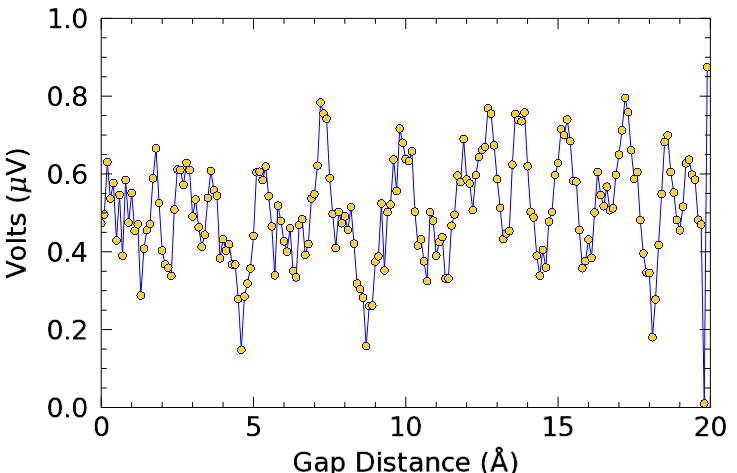

The following example shows Greek letters and mathematical symbols in the x and y axis titles.

; Define the data.
t = 0.1*FINDGEN(200)
y = SMOOTH(RANDOMU(seed,200), 5)
; Draw the plot
p = PLOT(t,y,'b', $
XTITLE='Gap Distance ($\AA$)', $
YTITLE='Volts ($\mu$V)', $
FONT_SIZE = 20, $
DIMENSION=[640,512], $
SYMBOL = 'circle', $
SYM_FILLED = 1, $
SYM_FILL_COLOR = 'gold')
For complete information on using the syntax, see TEXT .